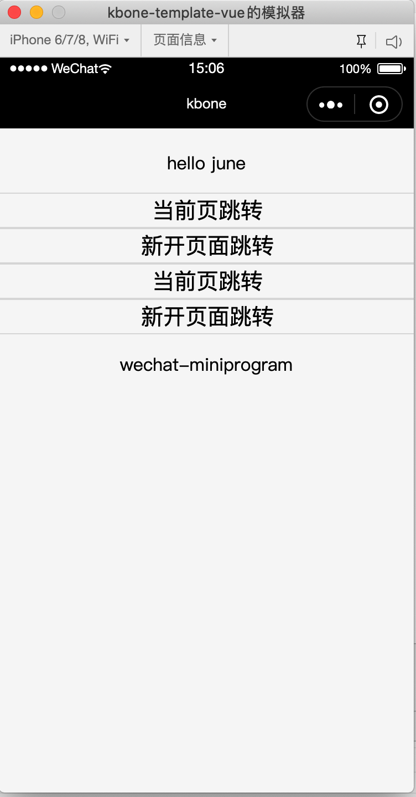
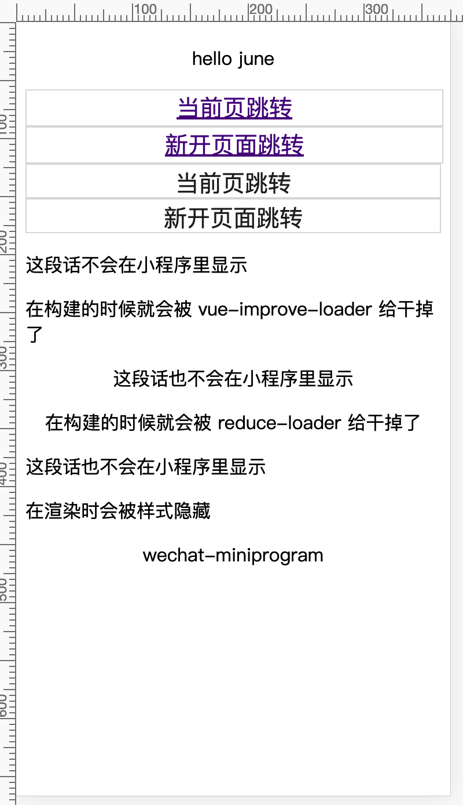

使用 kbone-cli 快速开发
1、对于新项目，可以使用 kbone-cli 来创建项目，首先安装 kbone-cli:
npm install -g kbone-cli
2、创建项目：
kbone init kbone-vue
模板选择 vue
3、进入项目，按照 README.md 的指引进行开发：
// 开发小程序端
npm run mp
// 开发 Web 端
npm run web
// 构建 Web 端
npm run build
执行 npm run mp 命令后，下载安装好微信开发者工具，打开工具，导入kbone-basic/dist/mp文件，即可预览项目效果：

执行 npm run web 命令后，在浏览器中预览效果：

执行 npm run build 命令后，会生成 dist/web 文件夹，里面是static静态文件和index.html入口文件。
PS：项目基于 webpack 构建，关于 webpack 方面的配置可以点此查看，而关于小程序构建相关的详细配置细节可以参考此文档。